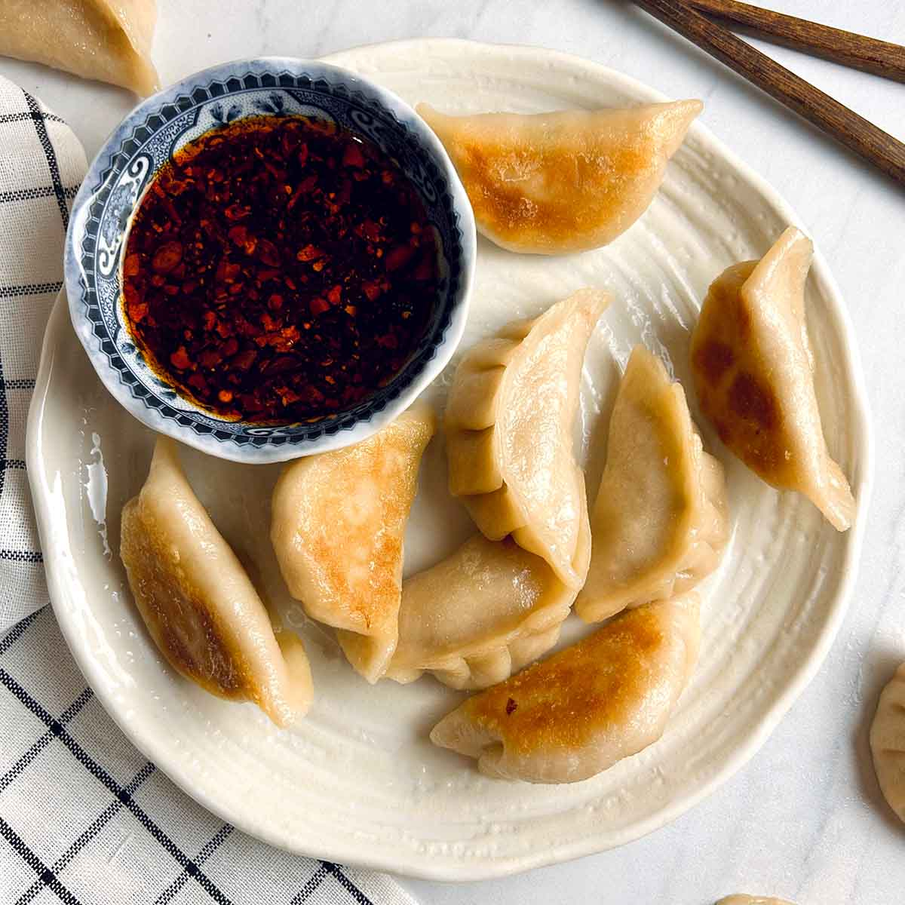

приготовление:
-
Приготовить 1 упаковку itsu Chicken Gyoza согласно инструкции. Я рекомендую готовить их на сковороде: разогреть небольшое количество масла, выложить замороженные гёдза и обжаривать пару минут, чтобы дно начало схватываться и подрумяниваться.
-
Аккуратно добавить в сковороду 4 ст. л. воды, накрыть крышкой и готовить ещё 5 минут, пока вода не испарится, а гёдза не прогреются полностью.
-
Пока гёдза готовятся под крышкой, смешать 2 ст. л. соуса тамари или светлого соевого соуса, 1,5–2 ст. л. рисового уксуса, 1 ст. л. мёда и несколько капель кунжутного масла. Для остроты по желанию добавить несколько капель масла раю.
-
Подать горячие гёдза с готовым соусом.